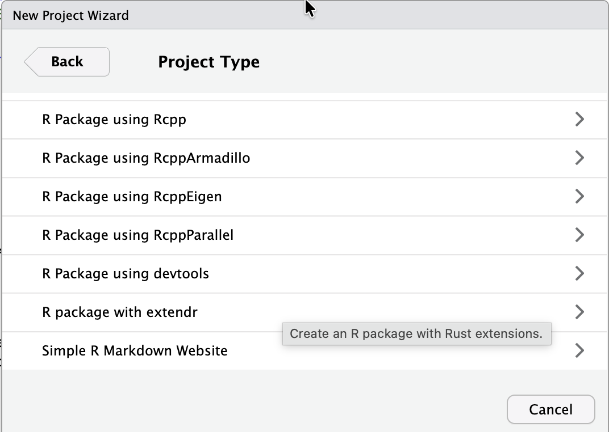
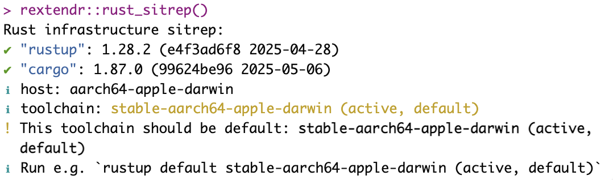
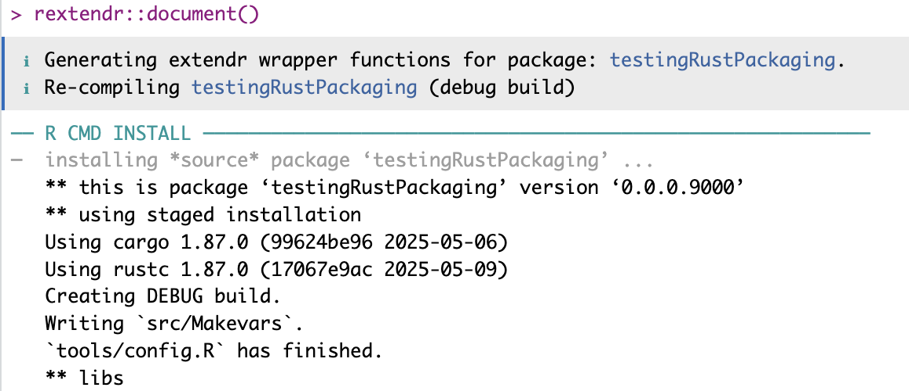
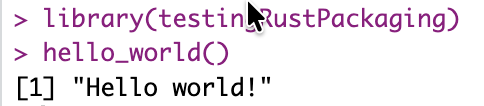

Just because… Or not.
This is a bit of an aside. R is… “easy”. But it has its disadvantages too. I keep coming across mentions of Rust. I actually bought “the Rust Programming Language, 2nd Ed.” (even though it’s available online, I like being able to read from the Kindle, offline). But I never spent time with it.
Learning a new language supposes an effort, so… why do it?
The Why
As I was saying, R is “easy”. And if you know how to use vectorized operations, are organized, use functions, run tests, etc. it also becomes rather powerful. For sure, for data, I really like it.
But certain things are maybe a bit too simplified.
So R is interpreted, which is a guarantee of not being the fastest, most efficient thing out there. And then it abstracts and lets you do stuff that… maybe, in some cases, it shouldn’t.
I don’t think anyone is going to be using R to code games or OS components, so there is that. But, being a computer engineer by training (a long time ago), I sometimes miss the more involved stuff.
Python does little for me. It is better than R for many things, particularly outside of data work. Even then I don’t consider it better because most of what others can do with Python, I can do with R. The exception, is when libraries by some vendors for their APIs are provided for Python, and not for R. Reasonable choice. Then, you know… {reticulate}.
OK so why Rust? After all, if it were for speed, there is also Rcpp (indeed! And I’ve used that a lot already).
Well, I was reading up on Rust and I like a few things. Like how the compiler won’t let you assign a char to a variable declared as i32. Or immutability by default of variables. I’m getting to the part of the documentation on Memory management.
On the memory management thing
I wouldn’t… care. Or even think about it. But then, in trying to optimize RLCS, I’ve seen the GC thing take a bit (not a lot!) of time… Garbage Collection.
Well looks like Rust promises to save me from that, too.
All in all
If Rust is more difficult but more… serious, more restrictive, faster…
If it has certain advantages over C++ (as in, it is “safer”).
If Linus Torvalds likes it for the Linux Kernel…
Well, who am I to discard it as an option?
So here we are. I really don’t know if I will end up using any of it in the future, but I like to have the option.
OK, setting things up
So far, I’ve only found this option to get Rust to play nice with R. A {reticulate} of sorts, but instead of Python, you get to use Rust functions.
Drawback: It’s only for packages? Looks like so. Well, thankfully I recently decided any new R project would be a package anyway, so there is that. (“Dumb luck”, really.)
First, the reference that got me started: https://extendr.rs/rextendr/articles/package.html
Actually, today I’ll basically just try to reproduce the steps in there.
First install the {rextendr} package (in my case, I’ll get up and running using RStudio, but the steps are there for command-line based approaches).

Then, you can use the Option for creating a new R Project of type package:


Quick check
Once you’re there, you’re actually two steps away from running your first Rust function call from R. I called my new package “testingRustPackaging”, and the sitrep is optional (but I’d recommend to run it first regardless, just in case an error shows up there):
rextendr::rust_sitrep()
rextendr::document()
library(testingRustPackaging)
hello_world()
The rextendr::document() function actually seems to do all the packaging (which differs a bit from the Cmd-Shift-B I got used to). I’ll need to dig a bit deeper there, I don’t know right now what one and the other do, respectively.

Regardless, by simply following the steps (on my MacBook Air M1, in case that’s relevant), I got the thing to work:

The key part here is, the hello_world() function, it’s actually a Rust function. Mission accomplished, basically! Then you can add another function (as per the referenced guide):

So we’re done. What next?
Well, next, we can keep adding functions in Rust. Some will need to be “exported” so as to get R to be able to call them, others won’t need to be (same as “normal” R package functions).
Similar to {roxygen2}, document() of {rextendr} will take care of generating the DOCUMENTATION file, as well as the NAMESPACE for us.
There, again, I worry, what will I need to consider in the future if I throw in a mix of simpler R functions and Rust functions… Will {roxygen2} compete with {rextendr}? I don’t know. I’ll have to learn some more, but that’s for later. I guess rextendr will be a wrapper over roxygen? IDK.
Anyhow, here is apparently where you would edit your Rust functions:
<package base>/src/rust/src/lib.rs
And here an example of an non-exported function being called from within an exported one:


Conclusions
Well, this was “easy” as in: I just followed a step-by-step, so definitely not hard. But it opens new possibilities.
I think I’m going to like Rust, if I manage to set aside some time to learn it. It’s apparently stricter (good), safer (very good), faster (well, I guess comparable to Rcpp in my usual setups… Still: good).
The fact you need to put a package setup in the middle, the warnings from CRAN about packaging Rust/cargo stuff… Not so good.
But still. I’m curious about whether I justify to myself spending more time on this topic in the future.
We’ll see :)